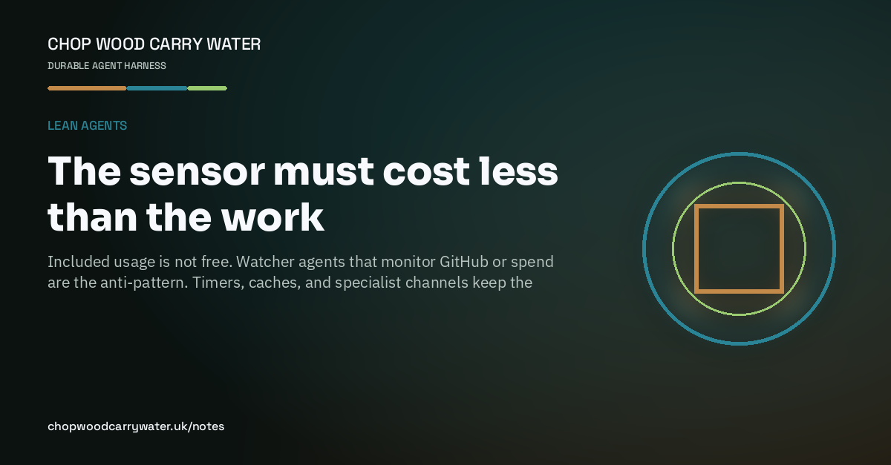

Lean agents · 19th August 2026
The sensor must cost less than the work
Included usage is not free. Watcher agents that monitor GitHub or spend are the anti-pattern. Timers, caches, and specialist channels keep the meter honest.

A Cursor invoice line of zero cents on Ultra included usage is settlement, not work. The tokens still burned the allotment. Pricing this chat from tokenUsage.totalCents put it around four dollars, not free. Across the cycle, invoice dollars were about a third of token-cost dollars.
The expensive failure mode is using the agent as the sensor. In mid-August a CI-watch lane spawned about ninety Task workers and billed on the order of two hundred dollars while the parent chat looked cheap. gh run watch inside Composer re-bills a growing transcript. That is measuring spend by spending.
The cheap shape is ordinary: a five-minute local timer writing a cache, an hourly tool-I/O summary, a weekly official Usage CSV into Preloop, and a one-line collector. Preloop Cloud Flows stay the async PR judge, not a GitHub watcher. Cursor My Machines run tools; they do not make inference free. Local first-pass lives on the home Ollama box, serialized against CAD on the same GPU.
Specialist human channels follow the same rule. Julian CNC stays on the Telegram CNC topic with no nested Cursor Tasks. Escalate to a new Composer chat only when blocked. Chop wood, carry water: keep the sensor cheaper than the job.